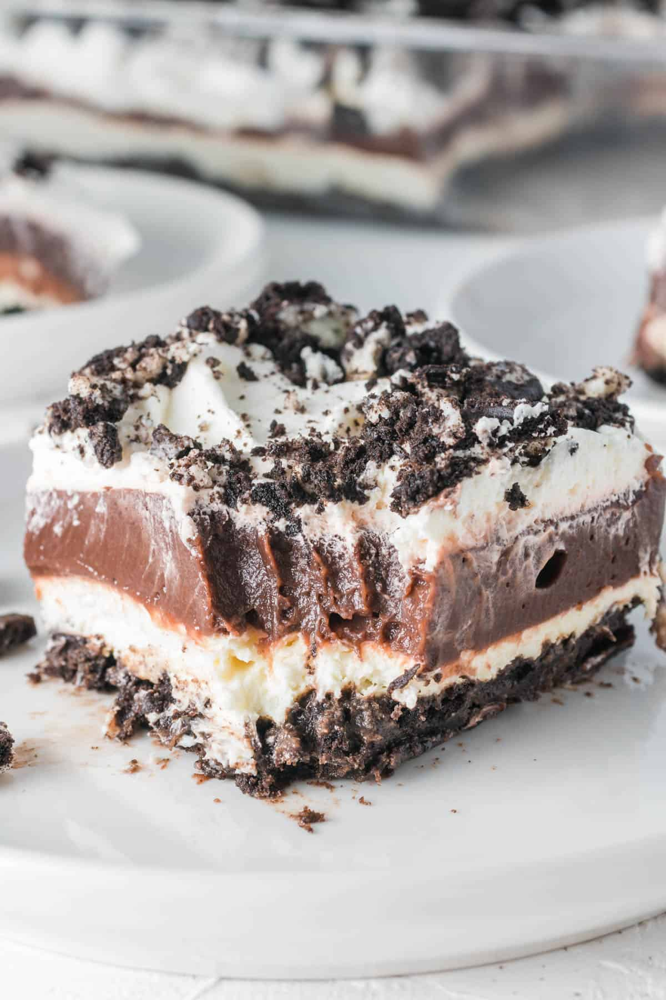

Oreo Dessert

Description
This No-Bake Oreo Dessert is a quick and easy no-bake dessert you’re gonna love! This chocolate dessert is made up of pudding, cream cheese, cool whip, and Oreos, of course.
Ingredients
- Oreos
- Butter
- Cream cheese - softened
- Instant vanilla instant pudding
- Cool Whip
- Milk
- Sugar
Steps
- Crush Oreos: In a 9x13 pan crush the Oreos, saving a few for topping later. Pour melted butter over crushed Oreos.
- Mix: In a large bowl, mix together with a mixer - instant pudding & milk until thickened. Then add the cream cheese and sugar - mix well.
- Add Cool Whip: Fold Cool Whip into the pudding mixture and spread over Oreos.
- Add Topping And Chill: Sprinkle remaining crushed Oreos on top. Chill for 2-3 hours before serving.